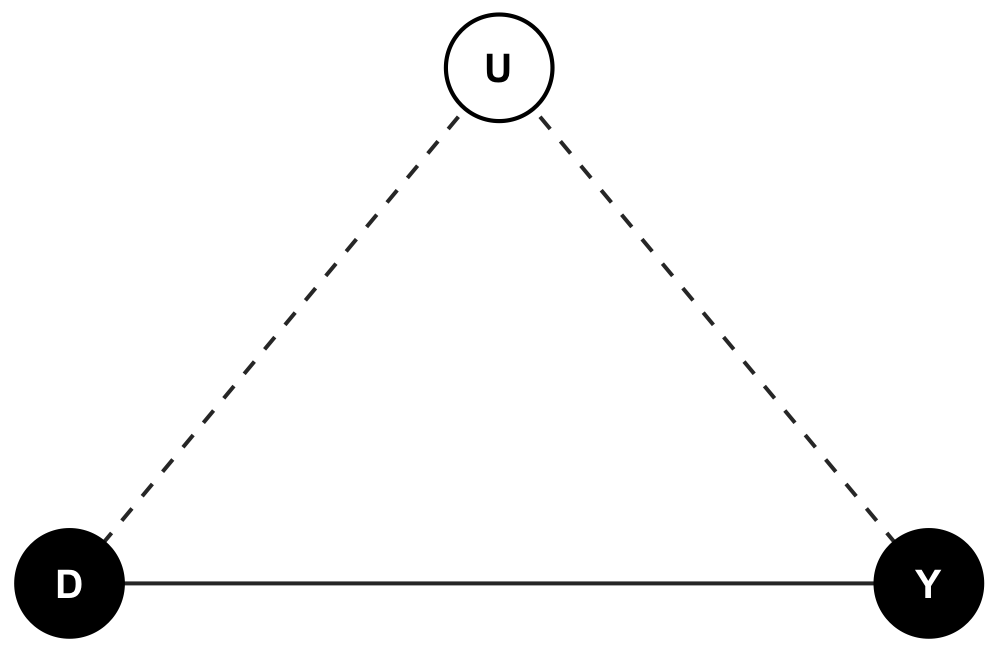
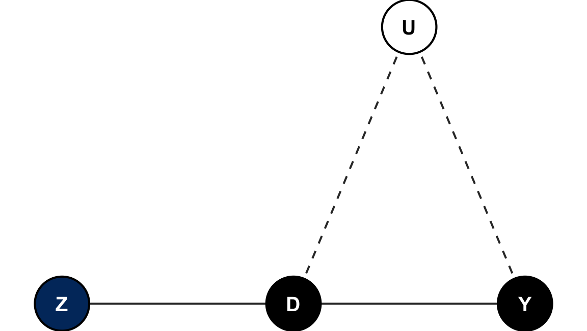
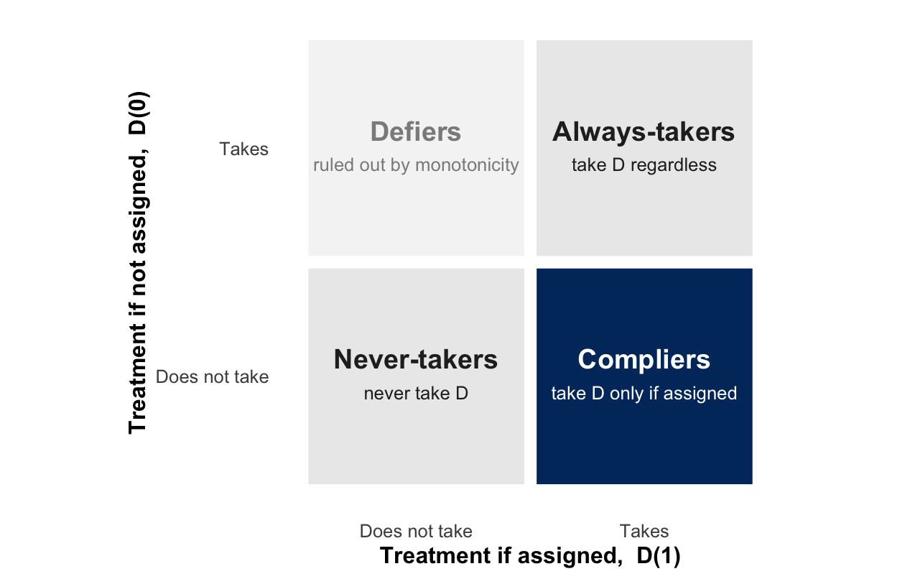
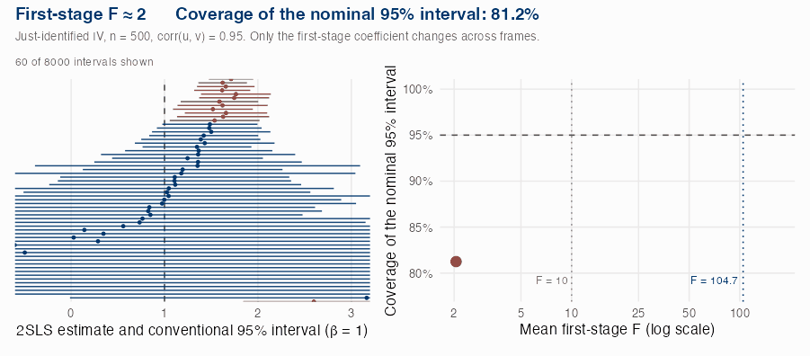

This guide covers the intuition, mechanics, and implementation of instrumental variables (IV) designs. We discuss applications in both experimental settings, where the instrument is randomized by the researcher, and observational studies, where we rely on “natural experiments” or policy shocks. We also cover diagnostic tests to assess the validity of an instrument.
Introduction
In randomized experiments, treatment is assigned by design, but actual treatment receipt may differ because of non-compliance. IV use variation in an instrument, such as random assignment, that affects treatment but is plausibly exogenous to potential outcomes. IV isolates causal effects for the subpopulation whose treatment status is influenced by the instrument, known as compliers.
In observational studies, treatment is often self-selected or determined by unobserved factors, leading to confounding bias. IV uses variation in an instrument that affects treatment but is plausibly exogenous to potential outcomes. IV isolates causal effects for the subpopulation whose treatment status is influenced by this natural variation, effectively treating the observational data as a “natural experiment.”
Experimental Example: Get-Out-The-Vote
Consider a Get-Out-The-Vote experiment where a researcher randomly assigns households to receive a canvassing visit or phone call, denoted as assignment \(Z\). The intended treatment is exposure to the canvasser, \(D\), and the outcome \(Y\) is whether the person votes.
Non-compliance arises when some assigned households are not reached or some reached do not change their behavior. Here assignment \(Z\) is an instrument for actual exposure \(D\). \(Z\) affects \(D\) but is plausibly exogenous to potential voting outcomes by design.
Observational Example: Rainfall and Conflict
In observational studies, researchers often look for “natural experiments.” For example, researchers might use deviations in rainfall, \(Z\), as an instrument for economic growth, \(D\), to study the effect of economic conditions on civil conflict, \(Y\).
Here, rainfall is the instrument because it drives economic productivity in agrarian societies but is arguably exogenous to political factors. The key challenge for inference in observational studies like this is the exclusion restriction, which requires arguing that rainfall affects conflict only through economic growth and not by other means, such as making roads impassable for troops. Weather instruments are a cautionary case in point: Mellon (2025) catalogues 194 distinct outcomes that weather has been argued to affect, any of which could violate the exclusion restriction.
Show DAG code
dag_confounding <- ggdag::dagify( Y ~ D + U, D ~ U,coords =list(x =c(D =1, Y =3, U =2),y =c(D =1, Y =1, U =2.2)))plot_iv_dag( dag_confounding,roles =c(D ="treatment", Y ="outcome", U ="unobserved"),dashed_edges =c("U->D", "U->Y"))

Figure 1: Unmeasured confounding. The treatment D and outcome Y share an unobserved common cause U (hollow node), opening the backdoor path D ← U → Y that biases the raw D→Y association. Dashed edges involve the unobserved confounder.
Show DAG code
dag_iv <- ggdag::dagify( D ~ Z + U, Y ~ D + U,coords =list(x =c(Z =1, D =2, Y =3, U =2.5),y =c(Z =1, D =1, Y =1, U =2.2)))plot_iv_dag( dag_iv,roles =c(Z ="instrument", D ="treatment", Y ="outcome", U ="unobserved"),dashed_edges =c("U->D", "U->Y"))

Figure 2: The instrumental-variable design. The instrument Z (Yale blue) moves the treatment D, which affects the outcome Y; the unobserved confounder U (hollow node) still biases the D→Y link. Identification requires that Z have no arrow into Y or U — the exclusion and independence assumptions — so the only path from Z to Y runs through D.
Methods
Instrumental variables rely on a specific causal structure. We assume there is unmeasured confounding between the treatment, \(D\), and outcome, \(Y\). However, we have an instrument, \(Z\), that affects \(D\) but has no direct effect on \(Y\) and is independent of confounders, \(U\).
Core Assumptions
Instrumental variables rely on a small set of core assumptions — make them explicit when presenting an IV strategy:
Relevance: The instrument must affect treatment. Formally, \(\text{Cov}(Z,D) \neq 0\), or \(\pi_1 \neq 0\) in the first-stage regression. This is testable via the first-stage regression and its F-statistic.
Independence / Exogeneity: The instrument must be as-good-as-randomly assigned with respect to potential outcomes and unobserved confounders. This is often satisfied by random assignment or a credible natural experiment. Notation: \(Z \perp\!\!\!\perp (Y(0), Y(1)) | X\).
Exclusion Restriction: The instrument affects the outcome only through the treatment, meaning there is no direct effect. In potential outcomes notation, \(Y(z,d) = Y(d)\). This assumption is generally not testable and must be argued on substantive grounds.
Monotonicity: There are no “defiers”, which are units for which \(Z\) increases the probability of treatment in the opposite direction. A common formulation: \(D_i(1) \geq D_i(0)\) for all \(i\).
Constant vs. Heterogeneous Effects
Constant Effects: If the treatment effect is the same for everyone, such that \(\beta_i = \beta\), IV identifies the Average Treatment Effect (ATE).
Heterogeneous Effects: If treatment effects vary across individuals, and Monotonicity holds, IV identifies the Local Average Treatment Effect (LATE). This is the average treatment effect for the subpopulation of compliers, defined as those who take treatment if assigned to it, but not otherwise.
Implementation
First-stage, Reduced-form, and 2SLS
First-stage
The regression that shows how the instrument moves treatment. Typically: \[ D_i = \pi_0 + \pi_1 Z_i + \gamma X_i + u_i \]
The estimated coefficient on \(Z\) (\(\hat{\pi}_1\)) measures relevance.
Reduced-form
The regression of the outcome on the instrument. It captures the total effect of \(Z\) on \(Y\): \[ Y_i = \alpha_0 + \alpha_1 Z_i + \delta X_i + v_i \]
The reduced-form coefficient \(\hat{\alpha}_1\) equals the intention-to-treat (ITT) effect in experiments.
Two-stage least squares (2SLS)
Implement IV by first predicting treatment from the instrument, known as the first stage, and then regressing the outcome on the predicted treatment, known as the second stage. \[ Y_i = \beta_0 + \beta_1 \hat{D}_i + \theta X_i + \epsilon_i \]
In the simple one-instrument setting, \(\hat{\beta}_{2SLS} = \hat{\alpha}_1 / \hat{\pi}_1\).
Recreate Our Example Data
For this exercise we’ll use simulated data to illustrate how to perform first-stage, reduced-form, and a simple 2SLS implementation.
Reproduce Our Data
# Simulate dataset.seed(12345)n <-2000Z <-rbinom(n, 1, 0.5) # instrument (random assignment)X <-rnorm(n) # observed covariateU <-rnorm(n) # unobserved confounder# Principal strata: always-takers, never-takers, and compliersalways <- U >qnorm(0.90)never <- U <qnorm(0.10)complier <-!always &!neverD0 <-as.integer(always)D1 <-as.integer(always | complier)D <-ifelse(Z ==1, D1, D0)# Potential outcomes differ only through treatmentbeta <-2.0Y0 <-1+0.5* X +1.5* U +rnorm(n)Y1 <- Y0 + betaY <-ifelse(D ==1, Y1, Y0)df <-data.frame(Y, D, Z, X)
# First stagefs <-lm(D ~ Z + X, data = df)lmtest::coeftest(fs, vcov. = sandwich::vcovHC(fs, type ="HC1"))
t test of coefficients:
Estimate Std. Error t value Pr(>|t|)
(Intercept) 0.0933658 0.0094527 9.8772 < 2e-16 ***
Z 0.8042112 0.0132730 60.5900 < 2e-16 ***
X -0.0120155 0.0063116 -1.9037 0.05709 .
---
Signif. codes: 0 '***' 0.001 '**' 0.01 '*' 0.05 '.' 0.1 ' ' 1
# Reduced formrf <-lm(Y ~ Z + X, data = df)lmtest::coeftest(rf, vcov. = sandwich::vcovHC(rf, type ="HC1"))
t test of coefficients:
Estimate Std. Error t value Pr(>|t|)
(Intercept) 1.209843 0.069616 17.3788 < 2.2e-16 ***
Z 1.548300 0.097601 15.8636 < 2.2e-16 ***
X 0.461180 0.047536 9.7017 < 2.2e-16 ***
---
Signif. codes: 0 '***' 0.001 '**' 0.01 '*' 0.05 '.' 0.1 ' ' 1
# 2SLS using ivreg (Recommended)iv_fit <-ivreg(Y ~ D + X | Z + X, data = df)lmtest::coeftest(iv_fit, vcov. = sandwich::vcovHC(iv_fit, type ="HC1"))
t test of coefficients:
Estimate Std. Error t value Pr(>|t|)
(Intercept) 1.030091 0.066519 15.486 < 2.2e-16 ***
D 1.925240 0.103112 18.671 < 2.2e-16 ***
X 0.484312 0.040962 11.823 < 2.2e-16 ***
---
Signif. codes: 0 '***' 0.001 '**' 0.01 '*' 0.05 '.' 0.1 ' ' 1
# OLS benchmark (biased by the confounder U)ols <-lm(Y ~ D + X, data = df)coef(ols)["D"]
D
2.973333
import pandas as pdimport statsmodels.api as smfrom linearmodels.iv import IV2SLS# The same simulated data is available as a CSV:# df = pd.read_csv("assets/iv_simulation.csv")# Under Quarto with reticulate you can also read the R object as `r.df`.# First stagefs = sm.OLS.from_formula('D ~ Z + X', data=df).fit(cov_type='HC1')print(fs.summary())# Reduced formrf = sm.OLS.from_formula('Y ~ Z + X', data=df).fit(cov_type='HC1')print(rf.summary())# 2SLS using linearmodels (Recommended)iv_fit = IV2SLS.from_formula('Y ~ 1 + [D ~ Z] + X', data=df).fit(cov_type='robust')print(iv_fit.summary)
Do not use manual second-stage OLS inference
The point estimate can match 2SLS; the second-stage OLS standard errors do not. They treat the fitted treatment as observed and omit first-stage estimation uncertainty. Use linearmodels.iv.IV2SLS above (or another IV estimator) for inference.
# Alternative: Manual 2SLS# First stage: regress D on Z and Xfs_manual = sm.OLS.from_formula('D ~ Z + X', data=df).fit(cov_type='HC1')df['D_hat'] = fs_manual.fittedvalues# Second stage: regress Y on D_hat and Xss_manual = sm.OLS.from_formula('Y ~ D_hat + X', data=df).fit(cov_type='HC1')print(ss_manual.summary())
* First stageregress D Z X, vce(robust)* Reduced formregress Y Z X, vce(robust)* 2SLS using ivregress (Recommended)ivregress 2sls Y X (D = Z), vce(robust)
usingFixedEffectModels, DataFrames# `df` holds the columns Y, D, Z, X. FixedEffectModels expresses the# excluded instrument with the (endogenous ~ instrument) syntax.reg(df, @formula(Y ~ X + (D ~ Z)), Vcov.robust())
Because the instrument is randomly assigned, the reduced form and the first stage are both unbiased, and their ratio recovers the true effect: 2SLS lands near the built-in value of 2.0 (about 1.93 in this draw), while OLS is pulled to roughly 2.97 by the confounder U. Note one limitation of this teaching example: every unit shares the same effect (\(\beta = 2\)), so the LATE and the ATE coincide here by construction. The distinction between them only bites when effects are heterogeneous, which is where the Card walkthrough below does its work.
Interpretation
IV in Experiments
In randomized experiments, random assignment, \(Z\), serves as an instrument for actual treatment receipt, \(D\).
Under monotonicity, the population consists of:
Always-takers: Take treatment regardless of assignment.
Never-takers: Never take treatment regardless of assignment.
Compliers: Take treatment only if assigned.
Defiers: Take treatment only if not assigned. We ruled this group out by assumption.
These four types are defined by a unit’s two potential treatment states — what it would do if assigned (\(D(1)\)) and if not assigned (\(D(0)\)) — and monotonicity removes one of the four cells.
Show figure code
strata <- tibble::tribble(~d1, ~d0, ~label, ~sub, ~role,1, 0, "Compliers", "take D only if assigned", "complier",1, 1, "Always-takers", "take D regardless", "other",0, 0, "Never-takers", "never take D", "other",0, 1, "Defiers", "ruled out by monotonicity", "defier")fill_map <-c(complier = yale_blue, other ="grey92", defier ="grey96")text_map <-c(complier ="white", other ="grey15", defier ="grey55")ggplot2::ggplot(strata, ggplot2::aes(x =factor(d1), y =factor(d0))) + ggplot2::geom_tile(ggplot2::aes(fill = role), colour ="white", linewidth =3) + ggplot2::geom_text(ggplot2::aes(label = label, colour = role),fontface ="bold", size =5, vjust =-0.4) + ggplot2::geom_text(ggplot2::aes(label = sub, colour = role),size =3.4, vjust =1.7) + ggplot2::scale_fill_manual(values = fill_map, guide ="none") + ggplot2::scale_colour_manual(values = text_map, guide ="none") + ggplot2::scale_x_discrete(labels =c("0"="Does not take", "1"="Takes")) + ggplot2::scale_y_discrete(labels =c("0"="Does not take", "1"="Takes")) + ggplot2::labs(x ="Treatment if assigned, D(1)",y ="Treatment if not assigned, D(0)") + ggplot2::coord_equal() + ggplot2::theme(panel.grid = ggplot2::element_blank(),axis.title = ggplot2::element_text(face ="bold"))

Figure 3: The four principal strata, defined by treatment status if assigned, D(1), against treatment status if not assigned, D(0). IV identifies the effect for compliers (Yale blue). Monotonicity assumes no defiers, removing the top-left cell; always-takers and never-takers do not respond to the instrument and drop out of the comparison.
IV identifies the treatment effect for compliers, also known as the LATE. This is the average effect of treatment for those assigned to treatment who actually receive it because of the assignment. This is important to estimate the effect of the treatment in the presence of non-compliance.
IV in Observational Studies
In observational studies, the logic of LATE still applies: IV estimates the effect for the subpopulation whose treatment status is influenced by the instrument. For instance, these are “compliers” who experience economic growth because of rainfall.
In experiments, “compliance” is often a choice, such as opening the door to a canvasser. In observational settings, “compliance” is determined by the structure of the natural experiment. For example, this could be regions where the economy is sensitive to rain. Thus, which units comply must be argued for by the researcher.
Additionally, while experimental IVs rely on randomization for exogeneity, observational IVs require rigorous defense of the exclusion restriction and independence assumptions, as there is no physical randomization device. The interpretation is often more cautious, emphasizing that the estimated effect is local to the specific variation induced by the instrument.
Worked Example: Card (1995) and College Proximity
The simulation above is a warm-up: it shows that the estimation machinery recovers a known data-generating effect. The Card example (Card 1995) is where the researcher has to make and defend a sequence of decisions. The data are available without downloading anything as ivmodel::card.data; use nearc4 as the instrument, years of schooling educ as the treatment, and lwage as the outcome.
Step 1 — State the estimand and the instrument story
The estimand is the LATE of an additional year of schooling on log wages for students whose schooling responds to growing up near a four-year college. The instrument story is that proximity lowers the cost of attending, especially when a student can live at home; conditional on region, race, urban residence, and experience, proximity is assumed to be independent of potential wages and to affect wages only through schooling.
The plausible compliers are students on the margin of attending college, for whom growing up near a college tips the decision. The estimate is not automatically the return to schooling for students who would attend regardless of proximity or for students who would not attend under either location.
One choice deserves emphasis before any estimation. The data record urban residence twice: smsa66 in 1966, when the schooling decision was being made, and smsa in 1976, when wages were measured. Only the 1966 measure is pre-treatment. Conditioning on the 1976 measure would adjust for a variable that schooling itself can change — college graduates disproportionately move to cities — which is a “bad control” that sits on the causal path from treatment to outcome. The example therefore uses smsa66 throughout. This is not a cosmetic decision: switching from the 1966 to the 1976 measure moves the 2SLS estimate by roughly thirteen percent.
Data for this guide
Both datasets used below are available as CSV files so that the R, Python, Stata, and Julia panels can all be run from the same source:
card.csv — the Card (1995) NLSYM teaching extract, exactly as shipped in ivmodel::card.data (3,010 rows, 35 columns).
The R panels read the data from the ivmodel package directly; the other panels read the CSV. Both routes give identical numbers, and every result in this guide has been checked to agree across R and Python to at least four decimal places.
import numpy as npimport pandas as pdimport statsmodels.api as smfrom scipy import statsfrom linearmodels.iv import IV2SLScard = pd.read_csv("assets/card.csv").dropna( subset=["lwage", "educ", "nearc4", "black", "smsa66","region", "exper", "expersq"])card["region"] = card["region"].astype("category")# Patsy formula fragment for the controls that carry the identification argumentCTRL ="exper + expersq + black + smsa66 + C(region)"
Step 2 — First stage: what does proximity move?
Estimate the first stage before looking at the 2SLS coefficient. A proximity effect of roughly one-third of a year means that the instrument changes schooling materially for some students, but the design still needs a strength diagnostic.
# use_t=True matches R's coeftest(), which uses the t distribution;# statsmodels otherwise reports normal-based p-values.card_fs = sm.OLS.from_formula(f"educ ~ nearc4 + {CTRL}", data=card).fit(cov_type="HC1", use_t=True)# With a single instrument the effective F of Montiel Olea-Pflueger is exactly# the squared robust t-ratio on the instrument. See the Weak Instruments# section for why this identity holds and when it stops holding.card_effective_F = (card_fs.params["nearc4"] / card_fs.bse["nearc4"]) **2print(pd.DataFrame({"proximity_effect_years": [card_fs.params["nearc4"]],"robust_se": [card_fs.bse["nearc4"]],"effective_F": [card_effective_F],}).round(3))
The effective F reported here is the heteroskedasticity-robust diagnostic of Montiel Olea and Pflueger (2013), computed with the ivDiag package (Lal et al. 2024). For its weak-instruments interpretation — the inference threshold and the weak-IV-robust confidence intervals — see the Weak Instruments section. The point here is to decide whether proximity supplies enough variation to make the next steps worth attempting.
Step 3 — Reduced form and 2SLS with robust inference
The reduced form estimates the effect of proximity on wages. 2SLS scales that reduced-form effect by the schooling shift induced by proximity.
card_rf = sm.OLS.from_formula(f"lwage ~ nearc4 + {CTRL}", data=card).fit(cov_type="HC1", use_t=True)# debiased=True applies the same finite-sample correction as HC1 in Rcard_iv = IV2SLS.from_formula(f"lwage ~ 1 + {CTRL} + [educ ~ nearc4]", data=card).fit(cov_type="robust", debiased=True)print(pd.DataFrame({"estimate": [card_rf.params["nearc4"], card_iv.params["educ"]],"robust_se": [card_rf.bse["nearc4"], card_iv.std_errors["educ"]],"estimand": ["Reduced form: nearc4", "2SLS: educ"],}).round(3))
Use robust standard errors for heteroskedasticity. If the instrument is assigned within counties or local labor markets, cluster at that assignment level; the released Card teaching data do not include that identifier, so the example reports HC1 robust standard errors and makes the limitation explicit. Choosing the level to cluster at, and the small-sample corrections that go with it, are treated in the StatLab standard-errors guide rather than here; this guide takes the covariance estimator as given and asks a separate question, which is whether the normal approximation built on top of it is trustworthy at the first-stage strength you have.
regress educ nearc4 exper expersq black smsa66 i.region, vce(robust)regress lwage nearc4 exper expersq black smsa66 i.region, vce(robust)ivregress 2sls lwage exper expersq black smsa66 i.region /// (educ = nearc4), vce(robust)
Step 4 — Try to break it
List the channels through which proximity could affect wages other than through schooling before running the tests. In this design, the threats include local labor markets that both attract colleges and pay higher wages; family background correlated with urbanicity or region; residential sorting; local networks or migration opportunities; and direct effects of proximity on the local economy.
The right falsification test asks whether the instrument predicts characteristics it cannot have caused — variables fixed before the schooling decision — after conditioning on the covariates that carry the identification argument. Regressing the instrument on the covariates it is already adjusted for (race, baseline urban residence, region) is not such a test: it only confirms that colleges sit in populated places, which we never disputed. The five measures below are recorded at age 14, long before college, so proximity has no channel through which to move them. If it nonetheless predicts them, that points to a background factor correlated with both proximity and wages.
# Falsification: does nearc4 predict PREDETERMINED age-14 characteristics,# conditional on the covariates in the identification argument? Proximity# cannot cause anything measured at 14, so a coefficient here is a warning.placebo_vars <-c(fatheduc ="Father's education",motheduc ="Mother's education",momdad14 ="Lived with both parents at 14",sinmom14 ="Single mother at 14",libcrd14 ="Library card at 14")placebo_table <- purrr::map_dfr(names(placebo_vars), function(v) { d_v <- card %>% tidyr::drop_na(dplyr::all_of(v)) m <-lm(reformulate(c("nearc4", "black", "smsa66", "region"), response = v),data = d_v) rr <- lmtest::coeftest(m, vcov. = sandwich::vcovHC(m, type ="HC1"))["nearc4", ] tibble::tibble(covariate =unname(placebo_vars[[v]]),estimate = rr["Estimate"],robust_se = rr["Std. Error"],p_value = rr["Pr(>|t|)"] )})knitr::kable( placebo_table,digits =3,col.names =c("Predetermined covariate", "nearc4 coef.", "Robust SE", "p"))
Predetermined covariate
nearc4 coef.
Robust SE
p
Father’s education
0.333
0.179
0.062
Mother’s education
0.016
0.142
0.908
Lived with both parents at 14
-0.021
0.018
0.250
Single mother at 14
0.014
0.013
0.286
Library card at 14
0.047
0.020
0.020
placebo_vars = {"fatheduc": "Father's education","motheduc": "Mother's education","momdad14": "Lived with both parents at 14","sinmom14": "Single mother at 14","libcrd14": "Library card at 14",}rows = []for v, label in placebo_vars.items(): d_v = card.dropna(subset=[v]) m = sm.OLS.from_formula(f"{v} ~ nearc4 + black + smsa66 + C(region)", data=d_v ).fit(cov_type="HC1", use_t=True) rows.append({"Predetermined covariate": label,"nearc4 coef.": m.params["nearc4"],"Robust SE": m.bse["nearc4"],"p": m.pvalues["nearc4"], })print(pd.DataFrame(rows).round(3))
Read the table honestly rather than hunting for a verdict. Three of the five predetermined characteristics are cleanly balanced; father’s education is marginal (\(p \approx 0.06\)); and childhood library access is associated with proximity at \(p \approx 0.02\). The stated rule is that a rejection is disqualifying — but calibration matters. Across five pre-specified tests, one result near \(p = 0.02\) is roughly what chance delivers, so this is not a clean kill. What it is is a signal pointing exactly where theory says to look: proximity tracks childhood household resources — parental schooling, books, library cards — and those resources plausibly affect adult wages through paths other than the student’s own years of schooling. A publishable Card design has to either absorb that background into the conditioning set or argue why it does not reach wages except through schooling. This is precisely the vulnerability that later work made formal: Kitagawa (2015) and Andresen and Huber (2021) both subject this instrument to explicit validity tests.
The asymmetry still holds in both directions. A clear rejection kills the instrument for this design. A pass is not evidence of validity; it only means these particular tests did not detect the specified problem.
Kitagawa’s Card application gives the key covariate contrast: the college-proximity instrument is rejected without covariates and fails to be rejected after conditioning on region, race, and urban controls (his covariate set includes urban residence in both 1966 and 1976). Those covariates are part of the identification argument, not decoration. The result is conditional on them because proximity is related to geography and social background that also predict wages.
Binarizing schooling can mechanically break exclusion
Years of schooling is multivalued, but researchers sometimes replace it with a binary indicator such as college completion. That is not an innocuous simplification: proximity may move a student from dropout to two-year college, or from two-year to some four-year schooling, while leaving the binary indicator unchanged. If those within-category changes affect wages, the instrument changes the outcome through the original treatment while the binarized treatment remains fixed, creating a direct path from \(Z\) to \(Y\) in the binarized model. Andresen and Huber (2021) derive tests for this problem and reject the relevant exclusion restriction in the Card NLSYM application. The remedy is to use the original multivalued treatment, such as years of schooling, or to justify why off-threshold shifts do not affect the outcome and report the corresponding tests.
Step 5 — Who are the compliers?
The ivdesc package (Marbach and Hangartner 2020) profiles covariate means for compliers, always-takers, and never-takers. Because it requires a binary treatment, use college completion only for this descriptive exercise; it does not replace the continuous-schooling estimand above.
card$college <-as.integer(card$educ >=16)# Principal-stratum shares (identical regardless of which covariate is profiled)strata_shares <- ivdesc::ivdesc(X = card$exper, D = card$college, Z = card$nearc4,boot =FALSE, balance =FALSE) %>%as.data.frame() %>% dplyr::filter(group !="sample") %>% dplyr::transmute(group = dplyr::recode(group,co ="Compliers", nt ="Never-takers", at ="Always-takers"),share = pi, share_se = pi_se )knitr::kable(strata_shares, digits =3,col.names =c("Stratum", "Share", "Robust SE"))
Stratum
Share
Robust SE
Compliers
0.069
0.017
Never-takers
0.707
0.010
Always-takers
0.225
0.013
Only about seven percent of the sample are compliers at the college-completion margin. That small share is the first thing to report, and it is a warning label: everything below is estimated from a thin slice of the data.
The decision is substantive: these compliers are a small, access-sensitive group rather than a representative sample of all workers. Read the profile with its uncertainty. Because compliers are only about seven percent of the sample, their means are imprecise — the estimated complier rate of urban-1966 residence even comes out slightly negative, which is not a real proportion but an artifact of the method-of-moments decomposition applied to a tiny stratum. What survives the noise is the direction: compliers look more likely to be Black and to have better-educated fathers than never-takers, consistent with an access-margin group. The LATE travels most plausibly to students facing similar geographic college-access margins, not automatically to students who would attend regardless of proximity or to those far outside the observed schooling margin.
Step 6 — What Card reported then versus what we would report now
A modern IV report
Card’s design remains influential and most of its logic remains. We recommend to add to the report an explicit LATE statement, robust or assignment-level clustered standard errors, an effective first-stage diagnostic, leave-one-cluster leverage checks, the full list of exclusion channels, balance and placebo tests, and a clear warning about binarizing years of schooling. The difference is that reporting standards have moved; it is not a claim that Card’s paper failed.
Leverage and influence: do not trust one full-sample F-statistic
Young (2022) recommends checking whether the first stage and 2SLS estimate are concentrated in one cluster or observation. The released Card file has region but not the local-labor-market identifier at which proximity was assigned, so the code below uses leave-one-region-out sensitivity as a transparent coarse check; with the actual assignment cluster, replace region. The lesson is plain: a large first-stage F concentrated in one cluster certifies nothing.
Figure 4: Leave-one-region-out sensitivity in the Card design. Each point re-estimates the 2SLS coefficient (left) or the effective first-stage F (right) after dropping one Census region; grey dashed lines mark the full-sample values. The coefficient is stable, but the first-stage F falls below the conventional threshold of ten (blue dotted line) for one region.
The 2SLS coefficient stays in a fairly narrow band as each region is dropped, but the effective first-stage F is not stable: it ranges from roughly ten to twenty across the nine fits and falls to the wrong side of the conventional threshold of ten when one region is removed. A single full-sample F of about seventeen therefore overstates how settled the instrument’s strength is. This is the concrete version of the warning: report the spread, not one number.
Weak Instruments
In order to recover the LATE, we need to make an assumption about relevance. Specifically, we assume, when running IVs, that the instrument is correlated with the endogenous explanatory variable. The presence of a small correlation between the IV and outcome variables is indicative of a weak instrument. When an instrument is weak, it technically satisfies relevance mathematically, but violates the assumption in practice and can lead to severe increases in bias. Our biggest concern is that in order for an IV analysis to be interpretable, we need to deliver confidence intervals with reliable coverage. The strength of our first-stage matters determines whether this coverage is accurate. When the instrument is strong, the normal approximation behind the CI is usually accurate. However, with a weak instrument, the sampling distribution of 2SLS can become skewed and heavy-tailed.

Figure 5: Coverage of the conventional 2SLS interval as the first stage strengthens. Each frame is 8,000 simulated studies from the same draws of the error terms; only the first-stage coefficient changes, so the intervals sharpen rather than being redrawn at random. Left: sixty of those studies, showing the 2SLS estimate and its conventional 95% interval, in Yale blue when the interval covers the true effect of 1 and in red when it misses; intervals running past the panel edges are clipped. Right: the coverage rate across all 8,000 studies at each first-stage strength, with the nominal 95% rate dashed. Coverage climbs steeply out of the weak region but then crawls: it is still only about 91% at an F of 10, and closes the last point or two of the gap only as F approaches the Lee et al. (2022) threshold of 104.7. Simulated with \(n = 500\) and a correlation of 0.95 between the structural and first-stage errors — a near-worst case for endogeneity, chosen because the distortion is mild when endogeneity is moderate.
We therefore recommend a fixed practice, developed over the rest of this section. Compute the effective first-stage F of Montiel Olea and Pflueger (2013), the strength diagnostic that remains valid under heteroskedasticity and clustering, and use it to choose an inference procedure. Two procedures do the work. The tF adjustment of Lee et al. (2022) rescales the conventional standard error by a factor read off the F, and costs one line of code. The Anderson–Rubin interval is valid at any instrument strength and, in the just-identified designs that dominate applied work, gives up nothing in efficiency when the instrument is in fact strong (Andrews, Stock, and Sun 2019). Report the 2SLS estimate, the tF-adjusted interval, and the AR interval side by side. What the effective F should never do is decide which specifications appear in the paper: it is computed from the same data as the estimate and is correlated with it, so dropping “weak” specifications and keeping “strong” ones selects on noise and distorts the inference in the ones you keep. The first-stage F tells you which interval to compute, not which regressions to keep.
What the F > 10 rule of thumb actually established
You will see first-stage F statistics compared to a threshold of ten, and specifications defended or discarded on that basis. The cutoff comes from Staiger and Stock (1997) and was made precise by Stock and Yogo (2005), but it was calibrated to a question about bias: instruments count as weak if the worst-case bias of 2SLS exceeds ten percent of the worst-case bias of OLS. It was never calibrated to the coverage of a confidence interval. The bias-based critical value is also tabulated only for three to thirty instruments, where Andrews, Stock, and Sun (2019) report it ranges from 9 to 11.52; it is not defined for the just-identified design at all, because 2SLS has no finite first moment when there is one instrument per endogenous regressor. In the most common microeconometric setting, the rule has no referent.
Switch the criterion from bias to size and the answer stops being a constant. Defining instruments as weak when a nominal five percent t-test can reject fifteen percent of the time, the critical value is 8.96 with a single instrument and 44.78 with thirty. The threshold that would justify reading a conventional t-ratio at the five percent level is an F of 104.7 (Lee et al. 2022). Screening on the statistic also makes matters worse rather than better: in simulations calibrated to published AER specifications, Andrews, Stock, and Sun (2019) discard every draw with an effective F below ten and find that the maximum size of a nominal five percent t-test exceeds seventy percent, against under thirty-five percent without screening. The distortion is still material at an average first stage near twenty, appears whichever version of the F is screened on, and moving the cutoff relocates the problem rather than solving it.
None of this makes a small F safe to ignore. It means the F should be used as a diagnostic when selecting between different procedures rather than a pass-fail criterion.
Effective F as a Diagnostic
Instrument strength should be judged with a statistic that matches the standard errors you actually report. Andrews, Stock, and Sun (2019) recommend the effective first-stage F of Montiel Olea and Pflueger (2013) for the leading case of a single endogenous regressor, because the familiar first-stage F assumes homoskedasticity and loses its noncentral F distribution once errors are heteroskedastic or clustered. Two clarifications matter in practice. First, in a just-identified design the effective F reduces exactly to the heteroskedasticity-robust first-stage F, which is numerically the Kleibergen–Paap statistic that ivreg2 and its relatives already print. So with a single instrument the number your software reports is the effective F! The two diverge only with multiple instruments, where the effective F reweights the first-stage coefficients and the robust F stops tracking the quantity that governs 2SLS behaviour. Second, the pervasive error is not which F gets printed but what it is compared against: software routinely pairs a robust or Kleibergen–Paap F with Stock–Yogo critical values derived under homoskedasticity, and Andrews, Stock, and Sun (2019) are blunt that they know of no theoretical justification for gauging strength that way. Compute the effective F, and read it against the thresholds in this section rather than against a table it does not belong to.
# Repeated from Step 2 so the diagnostic and its interpretation sit together.# prec = 10 keeps the value unrounded before it is fed to tF() below.card_effective_F <-as.numeric(ivDiag::eff_F(data = card, Y ="lwage", D ="educ", Z ="nearc4", controls = card_covars,prec =10))# The homoskedastic first-stage F, for contrast. With one instrument, F = t^2.card_F_homoskedastic <- (coef(summary(card_fs))["nearc4", "t value"])^2knitr::kable( tibble::tibble(diagnostic =c("Homoskedastic first-stage F","Effective F (Montiel Olea-Pflueger)"),value =c(card_F_homoskedastic, card_effective_F) ),digits =2,col.names =c("First-stage diagnostic", "Card design"))
First-stage diagnostic
Card design
Homoskedastic first-stage F
15.76
Effective F (Montiel Olea-Pflueger)
16.64
# Effective F: squared HC1 t-ratio on the instrument (single-instrument case)card_effective_F = (card_fs.params["nearc4"] / card_fs.bse["nearc4"]) **2# The homoskedastic first-stage F, for contrastcard_fs_homosk = sm.OLS.from_formula(f"educ ~ nearc4 + {CTRL}", data=card).fit()card_F_homoskedastic = card_fs_homosk.tvalues["nearc4"] **2print(pd.DataFrame({"First-stage diagnostic": ["Homoskedastic first-stage F","Effective F (Montiel Olea-Pflueger)"],"Card design": [card_F_homoskedastic, card_effective_F],}).round(2))
The effective F of 16.64 you saw in Step 2 is the number the rest of this section acts on; this is where it gets interpreted. Setting it beside the homoskedastic F of 15.76 shows what the robustness correction is doing: it happens to raise the diagnostic slightly here, though that ordering is not general and is not the point. It clears the folk threshold of ten comfortably, and it is roughly one-sixth of the 104.7 that would license reading the conventional t-ratio at face value. The leave-one-region-out check above already showed this same statistic ranging from about ten to twenty across subsamples. Card’s instrument is therefore neither weak nor strong in any binary sense: it sits squarely in the region where the choice of inference procedure changes the reported interval, which is what the next two subsections are for.
tF Adjustment
Lee et al. (2022) supply the correction that costs the least. Rather than switch estimators, keep the 2SLS point estimate and its conventional robust or clustered standard error, then inflate that standard error by a factor read off a table indexed by the first-stage F. Equivalently — and this is how software implements it — replace the critical value 1.96 with a larger value \(c_F\) that depends on F. The factor is about 1.75 at \(F = 10\), falls to about 1.4 at \(F = 17\), and reaches 1.00 only at \(F = 104.7\), the point at which the conventional interval becomes valid on its own. The adjustment is defined for any \(F > 3.84\); below that, this route cannot deliver a bounded interval at all. Nothing is re-estimated, no new estimator is introduced, and the point estimate does not move.
It’s worth taking some time to reflect on your adjustment strategy. When adjusting across 1,311 specifications drawn from 61 AER papers, Lee et al. (2022) find that confidence interval lengths rise by about twenty-five percent on average, and that among specifications with \(F > 10\) that were conventionally significant roughly one quarter become insignificant at the five percent level.
ivDiag::tF() prints a critical value, not the multiplier
The cF column is the adjusted critical value that replaces 1.96, not the factor by which to scale the standard error. To recover the standard-error multiplier reported in Lee et al. (2022), divide: cF / 1.96. Reporting cF as though it were the inflation factor overstates the adjustment by roughly a factor of two.
# prec = 10 keeps the returned values unrounded; tF() otherwise rounds to 4# decimals, which propagates into any interval width computed from it.card_tF <- ivDiag::tF(coef =unname(card_iv_robust["educ", "Estimate"]),se =unname(card_iv_robust["educ", "Std. Error"]),Fstat = card_effective_F,prec =10)knitr::kable(t(card_tF), digits =4)
F
cF
Coef
SE
t
CI2.5%
CI97.5%
p-value
16.6422
2.7603
0.1597
0.0524
3.0497
0.0152
0.3043
0.0303
# The adjustment expressed as a standard-error multiplierunname(card_tF["cF"]) /1.96
[1] 1.408293
# No Python package implements tF, so this is a direct port of the smoothed# critical-value table in Lee et al. (2022), as used by ivDiag::tF()._F0 = np.arange(2.0, 10.3+1e-9, 0.1)_CF = np.array([18.66, 9.74, 7.37, 6.18, 5.43, 4.92, 4.54, 4.25, 4.01, 3.82, 3.65, 3.51,3.39, 3.29, 3.19, 3.11, 3.03, 2.97, 2.91, 2.85, 2.80, 2.75, 2.71, 2.67,2.63, 2.60, 2.57, 2.54, 2.51, 2.48, 2.46, 2.43, 2.41, 2.39, 2.37, 2.35,2.33, 2.32, 2.30, 2.29, 2.27, 2.26, 2.24, 2.23, 2.22, 2.21, 2.20, 2.19,2.17, 2.16, 2.16, 2.15, 2.14, 2.13, 2.12, 2.11, 2.10, 2.10, 2.09, 2.08,2.08, 2.07, 2.06, 2.06, 2.05, 2.04, 2.04, 2.03, 2.03, 2.02, 2.02, 2.01,2.01, 2.00, 2.00, 1.99, 1.99, 1.99, 1.98, 1.98, 1.97, 1.97, 1.97, 1.96])def tF(coef, se, Fstat):"""Lee et al. (2022) tF adjustment; interpolates cF in sqrt(F).""" r = np.sqrt(Fstat)if r <=2: cF = _CF[0]elif r >=10.3: cF =1.96else: i = np.max(np.where(_F0 < r)[0]) h1, h2 =abs(r - _F0[i]), abs(r - _F0[i +1]) cF = (_CF[i +1] * h1 + _CF[i] * h2) / (h1 + h2) t = coef / sereturn {"F": Fstat, "cF": cF, "Coef": coef, "SE": se, "t": t,"CI2.5%": coef - cF * se, "CI97.5%": coef + cF * se,"p-value": 2* (1- stats.norm.cdf(abs(t) / (cF /1.96)))}card_tF = tF(card_iv.params["educ"], card_iv.std_errors["educ"], card_effective_F)print(pd.DataFrame([card_tF]).round(4))# The adjustment expressed as a standard-error multiplierprint(card_tF["cF"] /1.96)
At an effective F of 16.6 the adjusted critical value is 2.76, so the conventional robust standard error of 0.052 is effectively inflated by a factor of 1.41, to 0.074. The 95% interval widens from \([0.057, 0.262]\) to \([0.015, 0.304]\), and the p-value moves from about 0.002 to 0.030. The estimate remains significant at the five percent level, but only just — an order of magnitude of apparent evidence was resting on an approximation that an F of 16.6 does not support.
Anderson–Rubin Intervals
There is a further problem that no amount of first-stage strength repairs. In a just-identified design, the sample covariance between the instrument and the treatment contains a term in the sample covariance between the instrument and the structural error. A draw that happens to push the 2SLS estimate toward the OLS bias therefore also inflates the apparent strength of the instrument, and because the 2SLS variance scales inversely with that same covariance, it simultaneously shrinks the estimated standard error. Keane and Neal (2023) call this spurious precision, and show that the resulting asymmetry in the power of the t-test persists with a first-stage F in the thousands: in one of their calibrations, the t-test rejects a true null of zero 23.7 percent of the time when the true effect is \(+0.30\) but only 2.3 percent of the time when it is \(-0.30\).
The Anderson–Rubin test sidesteps this entirely because it never forms the ratio that causes the trouble. It is an F-test from the reduced-form regression of the outcome on the instrument. Andrews, Stock, and Sun (2019) state it plainly for the single-instrument case: AR confidence intervals “are efficient regardless of the strength of the instruments, and so should be reported regardless of the value of the first stage F.” There is no efficiency sacrificed when the instrument turns out to be strong, so there is no situation in a just-identified design in which reporting AR costs anything.
# Port of ivDiag::AR_test(). Controls are partialled out of Y, D and Z first# (Frisch-Waugh), then the AR statistic is inverted over a grid of nulls.def _resid(col):return sm.OLS.from_formula(f"{col} ~ {CTRL}", data=card).fit().resid.to_numpy()Yt, Dt, Zt = _resid("lwage"), _resid("educ"), _resid("nearc4")Zmat = sm.add_constant(Zt)def ar_stat(beta0):"""AR test of H0: beta = beta0, from the reduced form of (Y - beta0*D) on Z.""" m = sm.OLS(Yt - beta0 * Dt, Zmat).fit(cov_type="HC1") F = (m.params[1] / m.bse[1]) **2return F, stats.f.sf(F, 1, int(m.df_resid))b, se = card_iv.params["educ"], card_iv.std_errors["educ"]grid = np.concatenate([ np.linspace(b -10* se, b -3.1* se, 100), b -3* se + np.arange(0, 301) * (0.02* se), np.linspace(b +3.1* se, b +10* se, 100),])accept = np.array([ar_stat(x)[1] >=0.05for x in grid])ar_ci = (grid[accept].min(), grid[accept].max())ar_bounded =not (accept[0] or accept[-1])print(pd.DataFrame({"Procedure": ["2SLS, conventional robust", "2SLS with tF adjustment","Anderson-Rubin (identification-robust)"],"Estimate": [b] *3,"Lower": [b -1.96* se, card_tF["CI2.5%"], ar_ci[0]],"Upper": [b +1.96* se, card_tF["CI97.5%"], ar_ci[1]],}).assign(Width=lambda d: d["Upper"] - d["Lower"]).round(4))
For Card the three procedures tell the same story: every interval excludes zero, and the AR interval \([0.066, 0.304]\) is in fact narrower than the tF interval \([0.015, 0.304]\), because tF buys its simplicity with some conservatism.
Over-identified designs are harder and the literature has not settled on one procedure. AR remains valid there but is no longer efficient, since it tests all overidentifying restrictions jointly and loses power as instruments are added. The conditional likelihood ratio test is the usual recommendation, often paired with LIML rather than 2SLS; Andrews, Stock, and Sun (2019) survey the options and Keane and Neal (2023) argue the LIML-plus-CLR combination should be the default. With many weak instruments — judge and examiner designs in particular — see Mikusheva and Sun (2022) instead.
A Note on Divergent Perspectives on Inference in 2SLS
The preceding advice describes what protects you in the worst case. It is worth staging the strongest argument that the worst case is uncommon. J. Angrist and Kolesár (2024) argue that for just-identified IV — the design that dominates applied microeconometrics — conventional inference is far more robust than the weak-instrument literature suggests. Their key quantity is the degree of endogeneity, the correlation \(\rho\) between the structural and first-stage errors. As long as \(|\rho| < 0.76\), a nominal five percent t-test rejects a true null less than ten percent of the time regardless of first-stage strength; under the stricter standard of no over-rejection at all, the bound is \(|\rho| < 0.565\).
The mechanism is the mirror image of the one in the previous subsection. Median bias does rise as the instrument weakens, but in a just-identified design precision falls at the same rate, and the conventional standard error registers that loss well enough that the interval still roughly covers. This is precisely what fails in over-identified models with many weak instruments, where the bias grows while the standard errors stay small enough to make the t-statistic misleading. J. Angrist and Kolesár (2024) further argue that values of \(|\rho|\) large enough to matter are implausible in most applications: in the returns-to-schooling setting, bounding the omitted-variable bias by what economists actually believe about ability bias puts \(|\rho|\) at no more than about 0.41, comfortably inside the safe region.
They also invert the pretesting result into something usable. Screening on the first-stage F exacerbates bias, as Andrews, Stock, and Sun (2019) also found, but screening on the sign of the estimated first stage minimises median bias among rules of that form, roughly halves it, and is very nearly costless in coverage.
The disagreement with Keane and Neal (2023) is real and both papers engage it directly. J. Angrist and Kolesár (2024) accept the arithmetic — the estimated standard error and the estimate are negatively correlated — but reject the inference, on the grounds that the conventional standard for reliability is unconditional coverage of the confidence interval, not the behaviour of a test conditional on the estimate you happened to get. Read together, the upshot is that Lee et al. (2022) and Keane and Neal (2023) characterise what can go wrong and how to be protected from it, while J. Angrist and Kolesár (2024) argue that the conditions required for it to go wrong are rare in practice. Because this point is in dispute we posit that the best way to protect yourself in the worst case is to report all three procedures. If they agree, say so. If not, note the differences and default to the AR set. Never select, drop, or reorder specifications on the basis of a first-stage F.
Implementation Checklist
State the estimand and the target population
Define the outcome \(Y\), endogenous treatment \(D\), and instrument \(Z\).
Say whether the estimand is a LATE and describe the plausible compliers.
Write the instrument story before estimating
Explain how \(Z\) changes \(D\).
List the channels through which \(Z\) could affect \(Y\) other than through \(D\).
State which covariates are required to block those channels and why.
Estimate and interpret the first stage
Report the first-stage coefficient and its uncertainty.
Compute the effective first-stage F statistic.
Decide whether the instrument supplies enough variation to proceed; see the Weak Instruments section for the inference threshold and robust alternatives.
Estimate the main 2SLS specification
Use an IV estimator rather than manual second-stage OLS.
Include the covariates that are part of the identification argument.
If validity is conditional on covariates, consider a fully interacted IV specification.
Use robust inference at the assignment level
Use heteroskedasticity-robust standard errors at a minimum.
Cluster where the instrument is assigned when assignment is grouped.
Try to break the design with balance and placebo tests
Test whether \(Z\) predicts pre-treatment covariates or outcomes it cannot cause.
A rejection kills the proposed instrument design. A pass is not evidence that the instrument is valid.
Profile the compliers
Report the estimated complier share where the design permits it.
Compare complier characteristics with always-takers and never-takers using ivdesc or an equivalent procedure.
Check leverage and influence
Re-estimate the 2SLS coefficient and first-stage diagnostic while dropping one assignment cluster or influential observation at a time.
Report the spread, not only the full-sample effective F.
Run formal validity tests where the design permits them
For binary instruments and treatments, consider the necessary-condition tests of Kitagawa (2015) and Huber and Mellace (2015).
If a multivalued treatment was dichotomized, test or defend the absence of off-threshold effects.
Reporting Checklist
First stage: report a first-stage table with the instrument coefficient, robust or clustered standard error, and effective F statistic.
Main estimate: report the 2SLS coefficient with robust or assignment-level clustered standard errors, the tF-adjusted interval, and the Anderson–Rubin interval, side by side. See Divergent Perspectives on Inference in 2SLS for what to do when they agree and when they do not.
Compliers: report the complier share and a profile comparing compliers with always-takers and never-takers when the design supports it.
Exclusion argument in prose: name the channels considered through which \(Z\) could affect \(Y\) outside \(D\), and explain why each is blocked, negligible, or addressed by a stated covariate. Do not replace this argument with a balance-test p-value.
Falsification results: report balance and placebo tests as one-directional checks: rejection is disqualifying for the design; non-rejection is not validation.
Leverage sensitivity: report the leave-one-cluster or leave-one-influential-observation spread for both the 2SLS estimate and first-stage diagnostic.
FAQs
What is a weak instrument? How do I know if my instrument is weak?
A “weak instrument” is one that moves the treatment too little for the conventional normal approximation behind \(\hat\beta \pm 1.96 \cdot \text{SE}\) to be reliable, so that 2SLS becomes biased toward OLS and its confidence intervals under-cover.
The Weak Instruments section is the full treatment: how to diagnose strength with the effective first-stage F, why the \(F > 10\) rule does not license a t-test, and how to report tF-adjusted and Anderson–Rubin intervals. Start at Divergent Perspectives on Inference in 2SLS if you only want the recommendation.
How do I test the exclusion restriction?
The exclusion restriction is not established by a single regression and you can’t directly test for it. Use a one-directional falsification workflow:
Write the channel argument in the paper. List every plausible way that \(Z\) could affect \(Y\) other than through \(D\), and explain why each is blocked or negligible conditional on the stated covariates.
Run balance and placebo tests. Test whether \(Z\) predicts pre-treatment covariates and outcomes that it should not affect.
Interpret rejection and non-rejection asymmetrically. A rejection kills the instrument for the proposed design. A pass is not evidence that the instrument is valid; it only means that these particular tests did not detect the specified problem.
Use formal necessary-condition tests when available. For binary-instrument designs with a binary treatment, Kitagawa (2015) tests nonnegativity restrictions on the implied complier outcome distributions, while Huber and Mellace (2015) test inequality moment restrictions on always-taker and never-taker potential-outcome means.
The Card example above shows why conditioning variables are part of identification: Kitagawa rejects college proximity without covariates and fails to reject after region, race, and urban controls are included. Andresen and Huber (2021) add a separate caution: binarizing a multivalued treatment can itself violate exclusion when the instrument moves people within the binary categories.
Can I still use IV analysis if I expect to see heterogeneous treatment effects?
Yes. If treatment effects vary across individuals and the monotonicity assumption holds, IV identifies the Local Average Treatment Effect (LATE) — the average treatment effect for compliers. This is a well-defined causal parameter, though it applies only to the subpopulation whose treatment status is affected by the instrument.
Can I combine several instruments and still interpret 2SLS as a LATE?
Usually not under the familiar, single-instrument monotonicity story. With two distinct instruments, standard monotonicity requires people to rank every relevant instrument combination in the same direction: if one person is induced by a change in one instrument while the other is held fixed, nobody else can move in the opposite direction. In practice, that amounts to assuming that people weight the instruments in effectively the same way, even when one instrument changes price, another information, and another access. That is a demanding behavioral claim, not a mere extension of the one-instrument case (Mogstad, Torgovitsky, and Walters 2021).
Partial monotonicity is the more credible alternative when each instrument has a stable direction conditional on the other instruments, while people may respond differently across margins. It can still support a positively weighted average of complier effects, but only when its observable implications hold. Report those checks rather than asserting monotonicity: the companion Stata module mivcausal tests whether the 2SLS estimand is a positively weighted average of complier effects — that is, whether the implied 2SLS weights are non-negative — while maintaining the partial-monotonicity assumption itself, in the common discrete-instrument settings. A failure means that the usual multiple-IV LATE interpretation is unavailable, even if the first stage is strong. Under the distinct limited-monotonicity framework, van ’t Hoff, Lewbel, and Mellace (2025) instead identify a combined-compliers LATE (CC-LATE): the effect for people moved when the relevant instruments jointly change.
Are judge or examiner designs just ordinary IV with many dummies?
No. Judge and examiner designs create a many-instrument problem as soon as the first stage uses a large set of judge or examiner indicators. Conventional 2SLS then has finite-sample bias toward OLS: each observation partly helps construct its own fitted treatment, and the problem grows as the number of instruments becomes large relative to the sample. A strong-looking aggregate first stage does not remove that concern. J. D. Angrist, Imbens, and Krueger (1999) propose jackknife IV (JIVE), which forms each observation’s fitted treatment from first-stage coefficients estimated on all other observations. Because a unit no longer helps predict its own treatment, the mechanical own-observation correlation that biases conventional 2SLS toward OLS is broken.
Kling’s (2006) random-judge study of incarceration length is the useful applied template: define the assignment set carefully, residualize within the appropriate randomization cells, and make the leave-one-out construction part of the design rather than an afterthought. In code, the practical pointer is a leave-one-out/JIVE first stage, not a saturated ivregress 2sls with every judge dummy treated as innocuous. Also distinguish many instruments from many weak instruments. For the latter, conventional JIVE Wald intervals can still misbehave; Mikusheva and Sun (2022) develop weak-identification-robust inference designed for that setting.
What if covariates are required for instrument validity?
Then the usual non-interacted 2SLS specification can be a poor causal summary. Suppose proximity raises treatment by 10 percentage points among rural students but lowers it by 5 points among urban students. Even if there are only compliers in the rural cell and only defiers in the urban cell, pooled 2SLS residualizes the instrument using the covariates and can assign a negative weight to one cell’s conditional LATE. The reported coefficient is then not an average causal effect; it is a difference of conditional effects. Słoczyński (2026) documents that the first-stage relationship in fact varies across covariate values in the large majority of published IV specifications he examines — rejecting the homogeneity that would guarantee non-negative weights — so the negative-weight problem is empirically common, not a theoretical corner case.
Make the covariates part of the identification and estimand argument. For discrete covariate cells, estimate a fully interacted specification that includes treatment-by-cell interactions and instruments each with the corresponding instrument-by-cell interaction. Schematically in R: ivreg(Y ~ D * cell | Z * cell, data = dat). This lets the first stage and the outcome relation vary by the covariates on which validity is conditioned, avoiding the pooled negative-weight mechanism. The price is dimensionality: many cells create many interacted instruments, so report cell-specific first stages and use many-instrument or weak-IV-robust methods when the interaction set is large.
How should I answer Reviewer 2’s request to generalize beyond compliers?
Answer directly: the IV estimate is the effect for the compliers defined by this instrument, not automatically the effect for every treated person, every untreated person, or the population affected by a proposed policy. That is not a defect to conceal; it is the estimand delivered by the design. First describe the compliers using observed covariates and explain whether their margin resembles the policy margin of substantive interest. The Card walkthrough’s complier profile is the model for this reporting step.
Going further requires an extrapolation argument, not a larger confidence interval. Marginal treatment effect (MTE) and policy-relevant treatment effect (PRTE) analyses use richer variation and assumptions about selection, potential outcomes, support, or functional form to move from the observed complier margin to another policy margin. Those assumptions can be valuable, but they are new identifying content and must be stated, diagnosed where possible, and owned in the paper. Mogstad and Torgovitsky (2018) explain how IV evidence can inform policy-relevant parameters under such additional structure. Do not write that the LATE “generalizes” by default; tell Reviewer 2 which population is identified, which target population is desired, and what added assumptions bridge the two.
What is two-sample IV, and is ordinary 2SLS inference enough?
Two-sample IV is for the setting in which the treatment and outcome are not observed together: one dataset contains the treatment, instrument, and controls, while another contains the outcome, instrument, and controls. Two-sample two-stage least squares (TS2SLS) combines the two samples’ moments to estimate the structural effect. This can be useful in linked-data, historical, or summary-data applications, but it is not the same as running a first stage in one file and treating the estimated coefficient as fixed in another. Transportability of the relevant instrument and covariate relationships across samples is part of the identification argument.
Point estimation and inference must also be separated. Standard TS2SLS standard errors rely on strong instruments and additional restrictions on the two samples’ error structure and moments. When instruments may be weak, weak-IV-robust confidence sets are the appropriate default. Choi and Shen (2019) provide the Stata command weaktsiv; the compact implementation pointer is weaktsiv y x (d = z), robust, which reports TS2SLS results alongside robust two-sample weak-IV tests and confidence sets. Before reporting a result, document which variables occur in which sample, whether the samples represent the same target population, and why the instrument’s first-stage relationship is comparable across them.
Why is my IV estimate so much bigger than OLS?
By itself, a larger IV estimate diagnoses nothing. Work through the possibilities in order. First, OLS and IV generally answer different questions: OLS describes an association in the full sample, while valid IV identifies the effect for compliers. If treatment effects are larger precisely for people whose treatment is changed by the instrument, IV can legitimately exceed OLS. Second, classical measurement error in the treatment attenuates OLS toward zero, while an instrument can recover a larger effect if it shifts true treatment rather than measurement noise. Third, endogeneity can bias OLS downward or upward; IV may be correcting a real selection or reverse-causality problem.
Only then turn to failure modes. Weak instruments make 2SLS noisy and can pull it toward OLS in expectation, while a favorable realization can look implausibly large; inspect weak-IV-robust confidence sets rather than explaining a point estimate after the fact. Finally, a direct effect of the instrument on the outcome, or a correlation with an omitted determinant of the outcome, can inflate IV in either direction. J. D. Angrist, Imbens, and Rubin (1996) emphasize that the causal interpretation rests on the compliance and exclusion assumptions, not on a comparison with OLS. Show the first stage, reduced form, complier profile, and falsification evidence; magnitude alone is not a validity test.
Can I run 2SLS manually by regressing Y on fitted D-hat?
Yes for the point estimate in the simple linear case; no for the usual second-stage OLS inference. Regressing \(D\) on the instruments and controls, saving \(\widehat D\), and regressing \(Y\) on \(\widehat D\) and the controls reproduces the 2SLS coefficient because both calculations use the same projected treatment variation. But the ordinary second-stage standard errors treat \(\widehat D\) as if it were observed. They omit the uncertainty from estimating the first stage and therefore are generally too small and have the wrong reference distribution for IV inference.
This is why the Python tab now labels the manual calculation as a mechanics demonstration only. linearmodels.iv.IV2SLS(Sheppard 2025) performs the same projection while computing an IV variance estimator; in R, use ivreg()(Fox, Kleiber, and Zeileis 2026) with an IV-appropriate robust covariance matrix; in Stata, use ivregress 2sls ..., vce(robust). Do not repair the manual calculation merely by attaching an HC1 covariance matrix to the second OLS regression: HC1 addresses heteroskedasticity conditional on the regressors, not generated-regressor uncertainty. The broader many-instrument version of this problem is one reason to use purpose-built estimators such as JIVE (J. D. Angrist, Imbens, and Krueger 1999).
May I use logit or probit fitted values as the second-stage regressor?
No. A logit or probit first stage followed by an OLS regression of \(Y\) on its fitted values is not 2SLS, and its coefficient and standard errors do not inherit a generic IV interpretation. Nonlinearity in the treatment model does not license replacing the endogenous treatment with a generated probability. The second stage still has to account for endogeneity and for the first-stage estimation problem. This is especially tempting with a binary treatment, but linear 2SLS is already a coherent estimator of the complier effect under the usual IV assumptions.
If a nonlinear first-stage prediction is substantively necessary, use it as an instrument for the observed treatment in a linear IV estimator, rather than as a right-hand-side substitute for treatment. In other words, the prediction belongs in the excluded-instrument slot of an IV routine, while the observed \(D\) remains the endogenous regressor. Then explain the additional assumptions that make the nonlinear prediction a valid instrument and obtain inference from the IV estimator. For binary outcomes or treatments, a fully specified nonlinear structural model may also be appropriate, but it targets a model-dependent parameter. J. D. Angrist (2001) recommends beginning with simple linear IV estimands rather than treating a nonlinear first stage as an automatic improvement.
Should I use a Hausman test to choose between OLS and IV?
No. A failure to reject an OLS-versus-IV Hausman test does not validate OLS or show that endogeneity is absent. The test asks whether the estimators differ by more than its sampling uncertainty; IV is often imprecise precisely because only a small share of treatment variation is instrument-induced. A wide IV interval can therefore produce non-rejection even when the OLS bias is substantively important. Choosing OLS because a low-power test did not reject confuses absence of evidence with evidence of exogeneity.
The decision to use IV should come from the research design: a credible source of exogenous treatment variation, a stated estimand, and an argument for exclusion and independence. Report OLS as a descriptive benchmark when helpful, but do not make it the default causal estimator after a non-rejection. Conversely, a rejection does not prove that IV is valid; it only says the two estimators differ under the test’s assumptions. Young (2022) finds that published IV estimates often differ substantively from OLS yet rarely reject OLS statistically, illustrating how little reassurance non-rejection provides. Use the Hausman result, if reported at all, as one comparison—not as an instrument-validity test or an estimator-selection rule.
Does a passing overidentification test prove that my instruments are valid?
No. A Hansen–Sargan overidentification test asks whether the instruments are mutually consistent with the fitted model under maintained assumptions; it does not test exclusion instrument by instrument. Its null includes the premise that at least one set of moment conditions correctly identifies the model, and the test can have little power against common direct effects or similarly biased instruments. A large p-value therefore says only that the available data did not detect disagreement among the instruments. It does not convert a design argument into statistical proof.
Rejection also needs interpretation. With heterogeneous treatment effects, different valid instruments can move different complier groups and therefore identify different LATEs. Their resulting moment conditions may conflict even when each instrument satisfies independence and exclusion for its own margin. Thus a rejection can signal invalidity, effect heterogeneity, functional-form misspecification, or some combination. Report the test, but pair it with the economic channel argument and instrument-specific reduced forms. In R, summary(iv_fit, diagnostics = TRUE) is the compact pointer for standard IV diagnostics. Hansen’s (1982) specification-test logic is useful here: overidentification is a joint test of a model, not a certificate for every exclusion restriction.
Can I use 2SLS when the outcome is binary?
Yes. With a binary outcome, linear 2SLS can identify the complier average causal effect on the probability of the outcome under the usual IV assumptions. The coefficient is interpreted in probability points for the people whose treatment changes with the instrument. This estimand remains meaningful even though a linear fitted conditional mean can fall below 0 or above 1 for some covariate values. Those out-of-range fitted values are a limitation of the linear approximation, not a reason to replace the estimator with a two-stage logit or probit procedure.
Alternative nonlinear methods answer different questions and require more structure. Bivariate probit imposes a latent-index model and a joint distribution for unobservables; its parameters are not automatically the LATE from linear IV. Kappa-weighting and related complier-weight estimators can target local effects under their own weighting, support, and nuisance-model conditions. Choose one because its estimand and assumptions match the scientific question, not merely because it keeps predictions in the unit interval. In code, the ordinary ivreg() or IV2SLS workflow remains the appropriate baseline for a binary outcome, with robust inference and a clear probability-point interpretation. J. D. Angrist (2001) provides the practical case for starting from these linear causal estimands.
How can I assess sensitivity to a possible exclusion-restriction violation?
Treat exclusion as a quantitative sensitivity problem, not a binary switch. Start by stating a substantively plausible direct effect of the instrument on the outcome, \(\delta\). In the simple binary-instrument Wald setup, if \(\delta\) is the direct difference in mean outcomes between \(Z=1\) and \(Z=0\), the resulting bias is \(\delta / [E(D\mid Z=1)-E(D\mid Z=0)]\). A small direct effect can therefore create a large IV bias when the first stage is small. Report how the estimate changes over a defensible range of \(\delta\), rather than declaring the direct effect either exactly zero or fatal without scale.
For inference, construct a union of confidence intervals over that range of direct effects: for each allowed \(\delta\), adjust the reduced form and form an IV confidence set, then take their union. This makes transparent which conclusions survive a specified violation. J. D. Angrist, Imbens, and Rubin (1996) provide an early sensitivity-analysis framework; Conley, Hansen, and Rossi (2012) formalize the “plausibly exogenous” approach. In Stata, plausexog is a practical pointer for this workflow. Sensitivity analysis does not rescue an implausible instrument, but it replaces an all-or-nothing assertion with an interpretable statement about the amount of exclusion failure required to change the conclusion.
What is a shift-share or Bartik instrument?
Shift-share instruments combine local exposure shares with aggregate shocks, so their identifying variation and inference problem are different from those of a conventional unit-level excluded instrument. Depending on the design, identification comes from many exogenous shocks, from exogenous shares, or from a combination; correlation across units exposed to the same shocks changes both the relevant uncertainty and the diagnostics. A conventional first-stage F-statistic and a generic clustered 2SLS standard error are therefore not a complete shift-share design analysis.
Use the logic in this guide for the core causal question—state the estimand, identify channels, and try to falsify the design—but do not import its ordinary-IV diagnostics mechanically. Borusyak, Hull, and Jaravel (2025) provide the practical guide to shift-share identification, shock-level inference, and the different roles of shares and shocks.
References
Andresen, Martin E., and Martin Huber. 2021. “Instrument-Based Estimation with Binarised Treatments: Issues and Tests for the Exclusion Restriction.”The Econometrics Journal 24 (3): 536–58. https://doi.org/10.1093/ectj/utab002.
Andrews, Isaiah, James H. Stock, and Liyang Sun. 2019. “Weak Instruments in Instrumental Variables Regression: Theory and Practice.”Annual Review of Economics 11: 727–53. https://doi.org/10.1146/annurev-economics-080218-025643.
Angrist, Joshua D. 1990. “Lifetime Earnings and the Vietnam Era Draft Lottery: Evidence from Social Security Administrative Records.”American Economic Review 80 (3): 313–36.
———. 2001. “Estimation of Limited Dependent Variable Models with Dummy Endogenous Regressors: Simple Strategies for Empirical Practice.”Journal of Business & Economic Statistics 19 (1): 2–28. https://doi.org/10.1198/07350010152472571.
Angrist, Joshua D., Guido W. Imbens, and Donald B. Rubin. 1996. “Identification of Causal Effects Using Instrumental Variables.”Journal of the American Statistical Association 91 (434): 444–55. https://doi.org/10.1080/01621459.1996.10476902.
Angrist, Joshua, and Michal Kolesár. 2024. “One Instrument to Rule Them All: The Bias and Coverage of Just-IDIV.”Journal of Econometrics 240 (2): 105398. https://doi.org/10.1016/j.jeconom.2022.12.012.
Borusyak, Kirill, Peter Hull, and Xavier Jaravel. 2025. “A Practical Guide to Shift-Share Instruments.”Journal of Economic Perspectives 39 (1): 181–204. https://doi.org/10.1257/jep.20231370.
Card, David. 1995. “Using Geographic Variation in College Proximity to Estimate the Return to Schooling.” In Aspects of Labour Market Behaviour: Essays in Honour of John Vanderkamp, edited by Louis N. Christofides, E. Kenneth Grant, and Robert Swidinsky, 201–22. Toronto: University of Toronto Press.
Choi, Jaerim, and Shu Shen. 2019. “Two-Sample Instrumental-Variables Regression with Potentially Weak Instruments.”The Stata Journal 19 (3): 581–97. https://doi.org/10.1177/1536867X19874235.
Conley, Timothy G., Christian B. Hansen, and Peter E. Rossi. 2012. “Plausibly Exogenous.”The Review of Economics and Statistics 94 (1): 260–72. https://doi.org/10.1162/REST_a_00139.
Fox, John, Christian Kleiber, and Achim Zeileis. 2026. Ivreg: Instrumental-Variables Regression by ’2SLS’, ’2SM’, or ’2SMM’, with Diagnostics. https://CRAN.R-project.org/package=ivreg.
Hansen, Lars Peter. 1982. “Large Sample Properties of Generalized Method of Moments Estimators.”Econometrica 50 (4): 1029–54. https://doi.org/10.2307/1912775.
Huber, Martin, and Giovanni Mellace. 2015. “Testing Instrument Validity for LATE Identification Based on Inequality Moment Constraints.”The Review of Economics and Statistics 97 (2): 398–411. https://doi.org/10.1162/REST_a_00450.
Keane, Michael, and Timothy Neal. 2023. “Instrument Strength in IV Estimation and Inference: A Guide to Theory and Practice.”Journal of Econometrics 235 (2): 1625–53. https://doi.org/10.1016/j.jeconom.2022.12.009.
Kling, Jeffrey R. 2006. “Incarceration Length, Employment, and Earnings.”American Economic Review 96 (3): 863–76. https://doi.org/10.1257/aer.96.3.863.
Lal, Apoorva, Mackenzie Lockhart, Yiqing Xu, and Ziwen Zu. 2024. “How Much Should We Trust Instrumental Variable Estimates in Political Science? Practical Advice Based on 67 Replicated Studies.”Political Analysis 32 (4): 521–40. https://doi.org/10.1017/pan.2024.2.
Lee, David S., Justin McCrary, Marcelo J. Moreira, and Jack Porter. 2022. “Valid t-Ratio Inference for IV.”American Economic Review 112 (10): 3260–90. https://doi.org/10.1257/aer.20211063.
Marbach, Moritz, and Dominik Hangartner. 2020. “Profiling Compliers and Noncompliers for Instrumental-Variable Analysis.”Political Analysis 28 (3): 435–44. https://doi.org/10.1017/pan.2019.48.
Mellon, Jonathan. 2025. “Rain, Rain, Go Away: 194 Potential Exclusion-Restriction Violations for Studies Using Weather as an Instrumental Variable.”American Journal of Political Science 69 (3): 881–98. https://doi.org/10.1111/ajps.12894.
Mikusheva, Anna, and Liyang Sun. 2022. “Inference with Many Weak Instruments.”The Review of Economic Studies 89 (5): 2663–86. https://doi.org/10.1093/restud/rdab097.
Mogstad, Magne, and Alexander Torgovitsky. 2018. “Identification and Extrapolation of Causal Effects with Instrumental Variables.”Annual Review of Economics 10: 577–613. https://doi.org/10.1146/annurev-economics-101617-041813.
Mogstad, Magne, Alexander Torgovitsky, and Christopher R. Walters. 2021. “The Causal Interpretation of Two-Stage Least Squares with Multiple Instrumental Variables.”American Economic Review 111 (11): 3663–98. https://doi.org/10.1257/aer.20190221.
Montiel Olea, José Luis, and Carolin Pflueger. 2013. “A Robust Test for Weak Instruments.”Journal of Business & Economic Statistics 31 (3): 358–69. https://doi.org/10.1080/00401706.2013.806694.
Sheppard, Kevin. 2025. linearmodels: Linear Panel, Instrumental Variable, Asset Pricing, and System Regression Models for Python. https://doi.org/10.5281/zenodo.2591973.
Słoczyński, Tymon. 2026. “When Should We (Not) Interpret Linear IV Estimands as LATE?”The Review of Economic Studies.
Staiger, Douglas, and James H. Stock. 1997. “Instrumental Variables Regression with Weak Instruments.”Econometrica 65 (3): 557–86. https://doi.org/10.2307/2171753.
Stock, James H., and Motohiro Yogo. 2005. “Testing for Weak Instruments in Linear IV Regression.” In Identification and Inference for Econometric Models: Essays in Honor of Thomas Rothenberg, edited by Donald W. K. Andrews and James H. Stock, 80–108. Cambridge: Cambridge University Press. https://doi.org/10.1017/CBO9780511614491.006.
van ’t Hoff, Nadja, Arthur Lewbel, and Giovanni Mellace. 2025. “Limited Monotonicity and the Combined Compliers LATE.”The Review of Economics and Statistics, 1–33. https://doi.org/10.1162/rest.a.1634.
@online{elkobi2026,
author = {Elkobi, Jonathan},
publisher = {Yale Library StatLab},
title = {Instrumental {Variables}},
date = {2026-08-17},
langid = {en},
abstract = {This guide covers the intuition, mechanics, and
implementation of instrumental variables (IV) designs. We discuss
applications in both experimental settings, where the instrument is
randomized by the researcher, and observational studies, where we
rely on “natural experiments” or policy shocks. We also cover
diagnostic tests to assess the validity of an instrument.}
}